Dobré pití —prodlužuje žití.
Everything comes and goes. Time flows, years, centuries, millennia pass and everything changes. But only the water from our unique spring remains unchanged.
It was, is, and will remain the best. That is why even 600 years ago monks, long before the first Bavarian laws on the beer’s purity, were already brewing beer in Podkovan.
Our mission is to bring you everything that nature has granted us, as well as the craft and knowledge of some of the best brewers in Czech Republic
 © Podkováň
since 1434 year